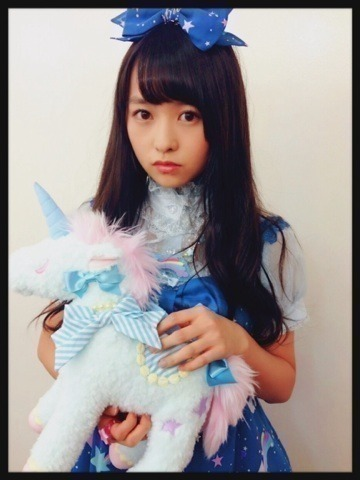

| 2013/10 12 Sat | 水玉の腕の予定。504 回目 |
あああああ

童顔だからなんなんだ
叫びたい。
......
代々木ライブの感想
ありがとうございました！
お知らせ
10月14日放送のドラマ
『海の上の診療所』
1話に玲香といくちゃんと私が
女子大生役で出演します。
お話を聞いた時は
びっくりしたというか、
私でいいのかという...
でも、なにより嬉しくて、
そして緊張しました。
ぜひ見てください！
明日は握手会。
1部2部3部よろしくお願いします！

第二弾あぶりさーもん
からの質問回答
スクバってどんな感じに
デコってるのー？
▶︎デコ...？
紫のアメーバみたいな
ストラップひとつです。
苔好きなのは知ってるけど
芝生はすき？♡
芝生はすき？♡
▶︎芝生もいいよなー
ふさふさしてるもんなー
かわいいよなー
...緑はいいなー
まりか
コメント(301)
2013/10/12 23:36